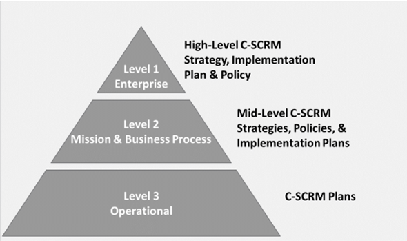

Organizations should consider implementing a standardized
process to address supply chain risk and educate their acquisition workforce on
threats, risk, and required security controls. Cyber supply-chain risk covers a wide
range of issues. Poor information security practices by lower-tier suppliers and
compromised software or hardware purchased from suppliers are two common examples.
Objectives
Describe the software supply chain.
Review the process of software supply-chain risk management.
Overview
There are many contributing stakeholders in a typical software
supply chain. Organizations commonly acquire applications that are built using
or
code. To
increase development efficiency and decrease development time, organizations often
accept a heavy reliance on third-party code (libraries and components) when
developing applications. What is the genesis of the inherited source code? Who
developed it? Who maintains it? Software security practitioners must mitigate the
risk of vulnerabilities and defects inherited from the software supply chain.
Software Supply Chain
In essence, the software supply chain is the network of
stakeholders that contribute to the content of a software product or that have the
opportunity to modify its content.
As more countries modernize, software development has become a
global activity. The mix-ins of global software participation and nations with
divergent agendas have raised concerns about the software supply chain. Often
originating entities who possess design and architecture knowledge are several
layers of abstraction away from the downstream consumer, which makes them
unavailable to support or verify components. At each step in the software supply
chain, an organization acquires software products or services from software
suppliers. Such software products or services may support software development, be
incorporated into a product and redistributed, or resold as originally acquired.
Risks can be introduced at any point in the supply chain and may
be inherited by each subsequent acquisition. For these reasons, supply chain risks
should be mitigated as early as possible in the acquisition life cycle. Mitigations
generally start with contract acquisition language that includes supply-chain risk
management considerations. The figure below showcases a typical software supply
chain.
Figure 1: Software Supply Chain
Supply Chain Participants
Many organizations may participate in the software supply chain.
The relationship between the participating organizations may be formally defined in
some cases and be informal in others. Where the relationships are formal,
requirements are defined, and contracts may be executed to govern the relationship.
A software supply chain is an example of a system-of-systems
environment where multiple, independently managed organizations provide technical
capabilities via a set of interdependent, networked systems. Software supply chain
assurance is defined as justified confidence that a software product functions as
intended and is reliable, safe, and secure.
Software Supply Chain Risk
The complex world of interconnected software systems creates
supply chain scenarios that increase the probability that software defects and
vulnerabilities will inadvertently be inserted into products while exacerbating
conditions conducive to the insertion of malicious code into software products.
Organizational hardware, software, and systems are susceptible to significant risk
if proper mitigating actions are not taken by security practitioners. Adversarial
forces are successfully exploiting supply chain weaknesses as an attack vector. If
suppliers of software and systems are not properly monitored and vetted, adversaries
may penetrate an organization's infrastructure and degrade critical system
integrity, confidentiality, and availability without the need to defeat perimeter
security controls.
Software Supply-Chain Risk
Management
NIST Special Publication 800-161r1—Supply Chain Risk
Management Practices for Federal Information Systems and Organizations
states, “Information and Communications Technology (ICT) supply chain risks are
associated with an organization’s decreased visibility into, and understanding of,
how the technology that they acquire is developed, integrated, and deployed. They
are also associated with the processes, procedures, and practices used to assure the
integrity, security, resilience, and quality of the products and
services.”1
Risk management is a comprehensive process that requires
organizations to:
Frame risk (i.e., establish the context for risk-based decisions).
Assess risk.
Respond to risk once determined.
Monitor risk on an ongoing basis using effective organizational communications
and a feedback loop for continuous improvement in the risk-related activities of
organizations.
The steps in the risk management process—Frame, Assess, Respond,
and Monitor—are iterative and not inherently sequential in nature. In the context of
the supply chain, the risks of the supply chain must be identified, assessed,
responded to, and monitored.
Organizations need to perform due diligence on their vendors to
identify the supply chain risks and integrate this process into their overall risk
management processes.
Assess
Assessment is the step that tests assumptions to understand risk
posture. Risk inputs including tolerance, threats, policy, and constraints are
combined to determine the probability and impact of a supply chain compromise.
Assessments aid organizations in updating risk framing by understanding present
internal and external conditions, which change over time. Cyber focused supply chain
risk assessments should be incorporated into the enterprise’s higher-level risk
assessment processes.
Respond
Risk response identifies, evaluates, decides on, and implements
appropriate courses of action to accept, avoid, mitigate, share, or transfer risk.
Risk Acceptance. Risk acceptance is the appropriate risk response when
the identified risk is within the organizational risk tolerance. Risk acceptance
differs from ignoring risks. Risk acceptance is a formal way to accept the risk
and purposefully proceed without mitigations. In contrast, ignoring risks
implies willful negligence and a lack of assessment, tracking, and documented
acceptance. Ignoring risks is never acceptable.
Risk Avoidance. Risk avoidance is the appropriate risk response when
the identified risk exceeds the organizational risk tolerance. Organizations may
conduct certain types of activities or employ certain types of information
technologies that result in risk that is unacceptable. In such situations, risk
avoidance involves taking specific actions to eliminate the activities or
technologies that are the basis for the risk or to revise or reposition these
activities or technologies in the organizational mission/business processes to
avoid the potential for unacceptable risk.
Risk Mitigation. Risk mitigation, or risk reduction, is the appropriate
risk response for that portion of risk that cannot be accepted, avoided, shared,
or transferred. Supply chain risk mitigations can consist of mandating that a
software supplier inherits the receiver organization’s development best
practices. At a minimum, independent verification and validation is recommended.
Risk Transference (Sharing). Risk transference is the appropriate risk
response when organizations desire and have the means to shift risk liability
and responsibility to other organizations.2
Changes to the supply chain can directly impact on the
organization. Through monitoring, organizations can make appropriate evaluations and
assess any impact from such changes. Subsequently, organizations may need to engage
in a dialogue with the system integrators, suppliers, and external service providers
about implications and mutual obligations.
Cyber Supply-Chain Risk Management
(C-SCRM)
addresses cybersecurity risks that occur through
the various stages of the supply chain arising from the use of software and
services. C-SCRM efforts and maturity are unique to each business-based compliance
and operational consideration. Effective C-SCRM implementations reduce the
likelihood of supply chain compromise by enhancing organizational detection,
response, and recovery from supplier system or software component defects. Further,
C-SCRM ensures organizations understand supplier components related to critical
business assets. When greater supplier assurance is achieved, software that supports
organizational missions can be viewed as more likely to meet mission requirements.
Implementing C-SCRM processes and controls requires investments
(e.g., business resources). Organizations should carefully weigh C-SCRM benefits
based on risk exposure from present or future supply chain implications. Regardless,
organizations are likely to have suppliers and be a supplier and cannot neglect
C-SCRM. The U.S. SECURE Technology Act (2018) highlights the importance of
supply-chain security by established the Federal Acquisition Security Council
(FASC). FASC seeks to enhance coordination, information sharing, and risk posture in
relation to supply-chain management.
Multitier Risk Management and
C-SCRM
Multitier risk management was discussed earlier. C-SCRM can be
integrated seamlessly within the three levels of organizational risk management.
C-SCRM activities are organizationally unique based on structure and mission. C-SCRM
activities at each level should produce artifacts that relate to the production of
artifacts at the other levels. The following diagram provides context to
organizational C-SCRM artifacts at various levels of risk management.

Figure 2: C-SCRM Documents in Multilevel Enterprise-wide
Risk Management3
3 Nadya Bartol, Jon Boyens, Matthew Fallon; Alex
Holbrook; Angela Smith, Kris Winkler; NIST Special Publication 800-161r1—
Cybersecurity Supply Chain Risk Management Practices for Systems and
Organizations; National Institute of Standards and Technology; https://nvlpubs.nist.gov/nistpubs/SpecialPublications/NIST.SP.800-161r1.pdf;
retrieved June 2023.
Cybersecurity Supply-Chain Risks
Cybersecurity risks are inherited through suppliers, suppliers'
supply chains, and other product or service usages. Supply chains feed business and
mission outputs, but they also increase an organization’s exposure to threats and
vulnerabilities through an enlarged attack surface. Disruptions in cybersecurity
supply chain CIA can create long-lasting negative effects. Theft of software,
intellectual property, or customer data may not only disrupt business operations,
but also cripple market reputation. The following chart summarizes the relationship
between cyberthreats, vulnerabilities, and likelihood when determining
organizational impact from realized supply chain risk.
Figure 3: Cybersecurity Risks Throughout the Supply
Chain4
4 Ibid.
Managing Third-Party Components
Risks associated with have been
discussed previously. This topic is revisited here to highlight the importance of
managing third-party components in the context of the software supply chain.
When a new security vulnerability is reported for a TPC,
security teams are faced with the challenge of determining whether the TPC is
included in their software. Further, if the TCP is included, are the organization’s
software or customer’s software impacted by the specific vulnerability? Addressing
the challenges associated with using third-party components requires a robust
process that is integrated into the organization’s software development life cycle
(SDLC). Management of TPCs should begin as early as possible in the SDLC.
Organizations should define and adopt a process for managing the security risk of
TPCs that fits into an organization’s existing SDLC.
To manage TPCs, an organization should:
Maintain a list of TPCs.
Assess security risks from TPCs.
Mitigate or accept risks arising from vulnerable TPCs.
Monitor changes to ensure that the risk profile remains acceptable over
time.5
The following figure shows TCP management activities mapped to
the life cycle.
According to NIST, a is a
formal record containing the details and supply chain relationships of various
components used in building software. Software developers and vendors often create
products by assembling existing open-source and commercial software components. The
SBOM enumerates these components in a product, creating greater supplier
transparency. There are certain minimum elements for an effective SBOM that include
data fields, processes, and support for automation.
Data Fields
An effective SBOM is consistent and presents software component
information in a digestible format. Data fields contain baseline component
information for tracking. This information should map easily to license and
vulnerability resources. Data fields may include:
Supplier name
Supplier’s original software name
Supplier’s version identifier
Unique identifiers
Dependencies (i.e., component X is included in software Y)
SBOM author’s name and information
Time and date of SBOM creation
Practices and Processes
SBOM standard formatting is not enough to increase transparency
for TPCs. SBOM must be integrated into contractual requirements in the early stage
of the software life cycle. SBOM should be integrated into the implementation phase
of the life cycle by examining third-party dependencies as part of the development
process. Later in sustainment, SBOM should be maintained and used to identify and
address vulnerabilities within an organization’s software infrastructure.
Automation Support
Automatic generation of SBOM and SBOM machine-readability are
important factors that when properly considered allow for SBOM scaling and sharing
across enterprises. SBOM data consistency through predictable data formatting
standards are crucial. There are several data formats with basic compatibility
between the data fields described earlier. Some examples include:
Software Supply Chain Risk Management (8.1)
Organizations should consider implementing a standardized process to address supply chain risk and educate their acquisition workforce on threats, risk, and required security controls. Cyber supply-chain risk covers a wide range of issues. Poor information security practices by lower-tier suppliers and compromised software or hardware purchased from suppliers are two common examples.
Objectives
Overview
There are many contributing stakeholders in a typical software supply chain. Organizations commonly acquire applications that are built using or code. To increase development efficiency and decrease development time, organizations often accept a heavy reliance on third-party code (libraries and components) when developing applications. What is the genesis of the inherited source code? Who developed it? Who maintains it? Software security practitioners must mitigate the risk of vulnerabilities and defects inherited from the software supply chain.
Software Supply Chain
In essence, the software supply chain is the network of stakeholders that contribute to the content of a software product or that have the opportunity to modify its content.
As more countries modernize, software development has become a global activity. The mix-ins of global software participation and nations with divergent agendas have raised concerns about the software supply chain. Often originating entities who possess design and architecture knowledge are several layers of abstraction away from the downstream consumer, which makes them unavailable to support or verify components. At each step in the software supply chain, an organization acquires software products or services from software suppliers. Such software products or services may support software development, be incorporated into a product and redistributed, or resold as originally acquired.
Risks can be introduced at any point in the supply chain and may be inherited by each subsequent acquisition. For these reasons, supply chain risks should be mitigated as early as possible in the acquisition life cycle. Mitigations generally start with contract acquisition language that includes supply-chain risk management considerations. The figure below showcases a typical software supply chain.
Figure 1: Software Supply Chain
Supply Chain Participants
Many organizations may participate in the software supply chain. The relationship between the participating organizations may be formally defined in some cases and be informal in others. Where the relationships are formal, requirements are defined, and contracts may be executed to govern the relationship.
A software supply chain is an example of a system-of-systems environment where multiple, independently managed organizations provide technical capabilities via a set of interdependent, networked systems. Software supply chain assurance is defined as justified confidence that a software product functions as intended and is reliable, safe, and secure.
Software Supply Chain Risk
The complex world of interconnected software systems creates supply chain scenarios that increase the probability that software defects and vulnerabilities will inadvertently be inserted into products while exacerbating conditions conducive to the insertion of malicious code into software products. Organizational hardware, software, and systems are susceptible to significant risk if proper mitigating actions are not taken by security practitioners. Adversarial forces are successfully exploiting supply chain weaknesses as an attack vector. If suppliers of software and systems are not properly monitored and vetted, adversaries may penetrate an organization's infrastructure and degrade critical system integrity, confidentiality, and availability without the need to defeat perimeter security controls.
Software Supply-Chain Risk Management
NIST Special Publication 800-161r1—Supply Chain Risk Management Practices for Federal Information Systems and Organizations states, “Information and Communications Technology (ICT) supply chain risks are associated with an organization’s decreased visibility into, and understanding of, how the technology that they acquire is developed, integrated, and deployed. They are also associated with the processes, procedures, and practices used to assure the integrity, security, resilience, and quality of the products and services.”1
Risk management is a comprehensive process that requires organizations to:
The steps in the risk management process—Frame, Assess, Respond, and Monitor—are iterative and not inherently sequential in nature. In the context of the supply chain, the risks of the supply chain must be identified, assessed, responded to, and monitored.
1 NIST Special Publication 800-161r1—Supply Chain Risk Management Practices for Federal Information Systems and Organizations; https://nvlpubs.nist.gov/nistpubs/SpecialPublications/NIST.SP.800-161r1.pdf; retrieved May 2023.
Identify
Organizations need to perform due diligence on their vendors to identify the supply chain risks and integrate this process into their overall risk management processes.
Assess
Assessment is the step that tests assumptions to understand risk posture. Risk inputs including tolerance, threats, policy, and constraints are combined to determine the probability and impact of a supply chain compromise. Assessments aid organizations in updating risk framing by understanding present internal and external conditions, which change over time. Cyber focused supply chain risk assessments should be incorporated into the enterprise’s higher-level risk assessment processes.
Respond
Risk response identifies, evaluates, decides on, and implements appropriate courses of action to accept, avoid, mitigate, share, or transfer risk.
2 NIST Special Publication 800-39—Managing Information Security Risk: Organization, Mission, and Information System View; https://nvlpubs.nist.gov/nistpubs/Legacy/SP/nistspecialpublication800-39.pdf; retrieved May 2023.
Monitor
Changes to the supply chain can directly impact on the organization. Through monitoring, organizations can make appropriate evaluations and assess any impact from such changes. Subsequently, organizations may need to engage in a dialogue with the system integrators, suppliers, and external service providers about implications and mutual obligations.
Cyber Supply-Chain Risk Management (C-SCRM)
addresses cybersecurity risks that occur through the various stages of the supply chain arising from the use of software and services. C-SCRM efforts and maturity are unique to each business-based compliance and operational consideration. Effective C-SCRM implementations reduce the likelihood of supply chain compromise by enhancing organizational detection, response, and recovery from supplier system or software component defects. Further, C-SCRM ensures organizations understand supplier components related to critical business assets. When greater supplier assurance is achieved, software that supports organizational missions can be viewed as more likely to meet mission requirements.
Implementing C-SCRM processes and controls requires investments (e.g., business resources). Organizations should carefully weigh C-SCRM benefits based on risk exposure from present or future supply chain implications. Regardless, organizations are likely to have suppliers and be a supplier and cannot neglect C-SCRM. The U.S. SECURE Technology Act (2018) highlights the importance of supply-chain security by established the Federal Acquisition Security Council (FASC). FASC seeks to enhance coordination, information sharing, and risk posture in relation to supply-chain management.
Multitier Risk Management and C-SCRM
Multitier risk management was discussed earlier. C-SCRM can be integrated seamlessly within the three levels of organizational risk management. C-SCRM activities are organizationally unique based on structure and mission. C-SCRM activities at each level should produce artifacts that relate to the production of artifacts at the other levels. The following diagram provides context to organizational C-SCRM artifacts at various levels of risk management.
Figure 2: C-SCRM Documents in Multilevel Enterprise-wide Risk Management3
3 Nadya Bartol, Jon Boyens, Matthew Fallon; Alex Holbrook; Angela Smith, Kris Winkler; NIST Special Publication 800-161r1— Cybersecurity Supply Chain Risk Management Practices for Systems and Organizations; National Institute of Standards and Technology; https://nvlpubs.nist.gov/nistpubs/SpecialPublications/NIST.SP.800-161r1.pdf; retrieved June 2023.
Cybersecurity Supply-Chain Risks
Cybersecurity risks are inherited through suppliers, suppliers' supply chains, and other product or service usages. Supply chains feed business and mission outputs, but they also increase an organization’s exposure to threats and vulnerabilities through an enlarged attack surface. Disruptions in cybersecurity supply chain CIA can create long-lasting negative effects. Theft of software, intellectual property, or customer data may not only disrupt business operations, but also cripple market reputation. The following chart summarizes the relationship between cyberthreats, vulnerabilities, and likelihood when determining organizational impact from realized supply chain risk.
Figure 3: Cybersecurity Risks Throughout the Supply Chain4
4 Ibid.
Managing Third-Party Components
Risks associated with have been discussed previously. This topic is revisited here to highlight the importance of managing third-party components in the context of the software supply chain.
When a new security vulnerability is reported for a TPC, security teams are faced with the challenge of determining whether the TPC is included in their software. Further, if the TCP is included, are the organization’s software or customer’s software impacted by the specific vulnerability? Addressing the challenges associated with using third-party components requires a robust process that is integrated into the organization’s software development life cycle (SDLC). Management of TPCs should begin as early as possible in the SDLC. Organizations should define and adopt a process for managing the security risk of TPCs that fits into an organization’s existing SDLC.
To manage TPCs, an organization should:
The following figure shows TCP management activities mapped to the life cycle.
Figure 4: TPC Life Cycle Steps6
5 Software Assurance Forum for Safety in Code; Managing Security Risks Inherent in the Use of Third-party Components, https://safecode.org/wp-content/uploads/2017/05/SAFECode_TPC_Whitepaper.pdf; Retrieved May 2023.
6 Ibid.
SBOM
According to NIST, a is a formal record containing the details and supply chain relationships of various components used in building software. Software developers and vendors often create products by assembling existing open-source and commercial software components. The SBOM enumerates these components in a product, creating greater supplier transparency. There are certain minimum elements for an effective SBOM that include data fields, processes, and support for automation.
Data Fields
An effective SBOM is consistent and presents software component information in a digestible format. Data fields contain baseline component information for tracking. This information should map easily to license and vulnerability resources. Data fields may include:
Practices and Processes
SBOM standard formatting is not enough to increase transparency for TPCs. SBOM must be integrated into contractual requirements in the early stage of the software life cycle. SBOM should be integrated into the implementation phase of the life cycle by examining third-party dependencies as part of the development process. Later in sustainment, SBOM should be maintained and used to identify and address vulnerabilities within an organization’s software infrastructure.
Automation Support
Automatic generation of SBOM and SBOM machine-readability are important factors that when properly considered allow for SBOM scaling and sharing across enterprises. SBOM data consistency through predictable data formatting standards are crucial. There are several data formats with basic compatibility between the data fields described earlier. Some examples include: